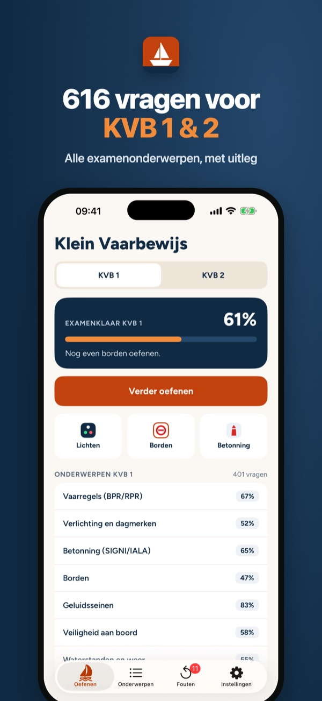
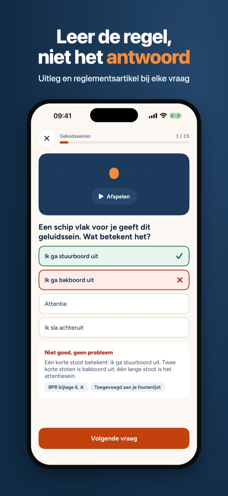
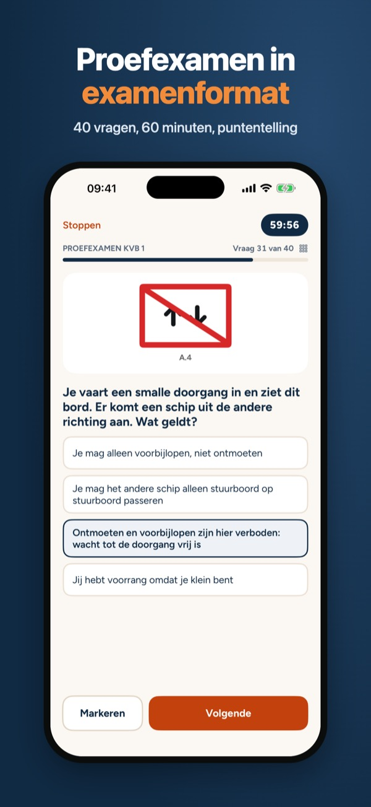
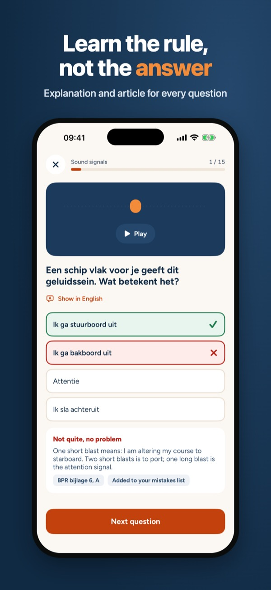
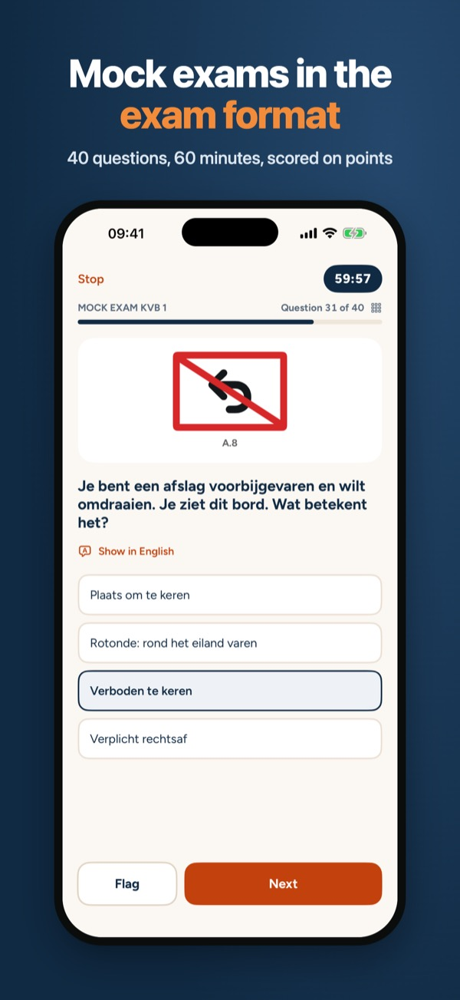
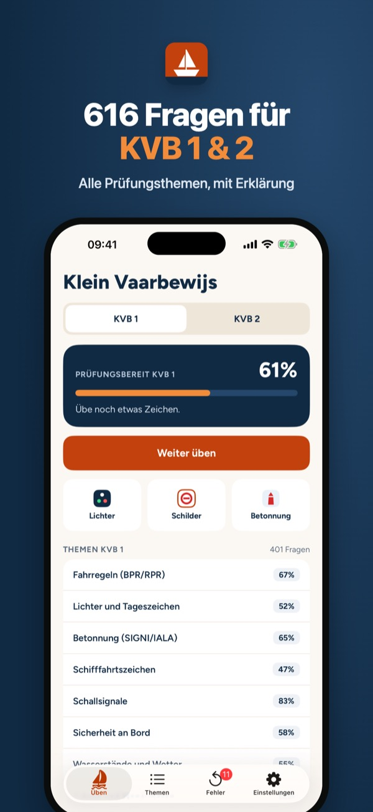
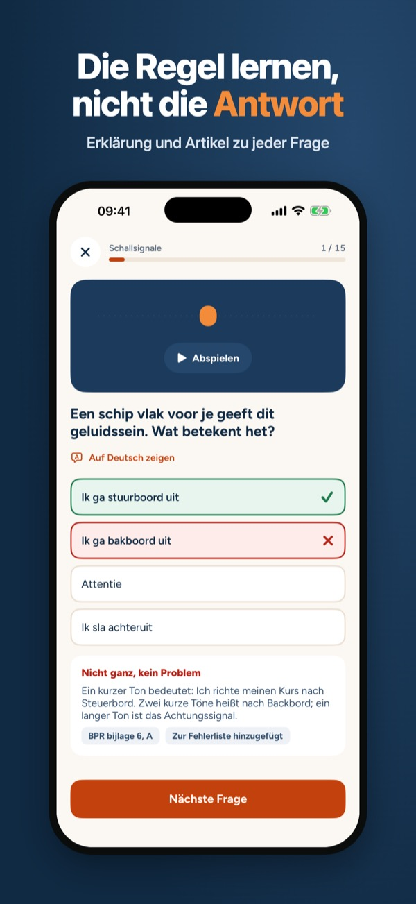

Examen, lichten & betonning



Oefen voor je Klein Vaarbewijs 1 of 2 in korte rondjes, waar je ook bent. Je ziet meteen wat goed en fout is, met uitleg en het artikel uit het reglement.
Kies KVB 1 of KVB 2. Je oefent per onderwerp of gewoon verder waar je was. De app onthoudt wat je lastig vindt en laat dat vaker terugkomen. Doe een proefexamen als je denkt dat je klaar bent en zie per onderdeel hoe je ervoor staat.
Vaarregels (BPR/RPR) kun je zonder aankoop oefenen. Met één aankoop open je alles van KVB 1 én KVB 2. Geen abonnement, geen account, geen advertenties. Werkt zonder internet.
De vragen zijn zelf geschreven op basis van de openbare reglementen. Deze app is niet verbonden aan het CBR. Kijk voor de actuele exameneisen op de website van het CBR.
Terms of Use (EULA): https://www.apple.com/legal/internet-services/itunes/dev/stdeula/
Privacy: https://baytechbv.github.io/privacy/klein-vaarbewijs-nl/
Dutch boating licence theory


Practise for the Dutch small craft licence, Klein Vaarbewijs 1 or 2, in short rounds wherever you are. You see straight away what is right or wrong, with an explanation and the article of the regulation.
The questions are in Dutch, like the exam. Every question has an English translation and every explanation is available in English.
Navigation rules (BPR/RPR) can be practised without buying. One purchase unlocks everything for KVB 1 and KVB 2. No subscription, no account, no ads. Works offline.
The questions are written for this app from the public regulations. This app is not affiliated with the CBR. Check the CBR website for the current exam requirements.
Terms of Use (EULA): https://www.apple.com/legal/internet-services/itunes/dev/stdeula/
Privacy: https://baytechbv.github.io/privacy/klein-vaarbewijs-nl/
Bootsführerschein Niederlande


Bereite dich auf den niederländischen Bootsführerschein Klein Vaarbewijs 1 oder 2 vor, in kurzen Runden, wo immer du bist. Du siehst sofort, was richtig oder falsch ist, mit Erklärung und dem Artikel der Verordnung.
Die Fragen sind auf Niederländisch, wie in der Prüfung. Zu jeder Frage gibt es eine deutsche Übersetzung, und alle Erklärungen gibt es auf Deutsch.
Die Fahrregeln (BPR/RPR) kannst du ohne Kauf üben. Mit einem Kauf schaltest du alles für KVB 1 und KVB 2 frei. Kein Abo, kein Konto, keine Werbung. Funktioniert offline.
Die Fragen sind für diese App auf Grundlage der öffentlichen Vorschriften geschrieben. Diese App ist nicht mit dem CBR verbunden. Die aktuellen Prüfungsanforderungen findest du auf der Website des CBR.
Terms of Use (EULA): https://www.apple.com/legal/internet-services/itunes/dev/stdeula/
Privacy: https://baytechbv.github.io/privacy/klein-vaarbewijs-nl/